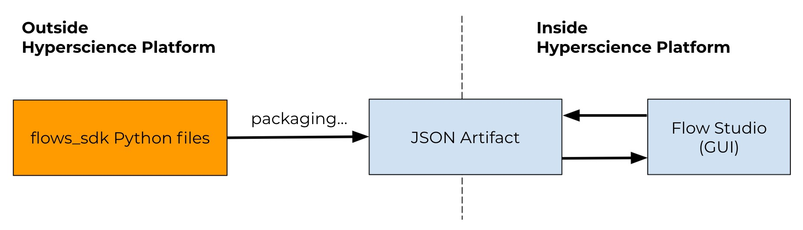
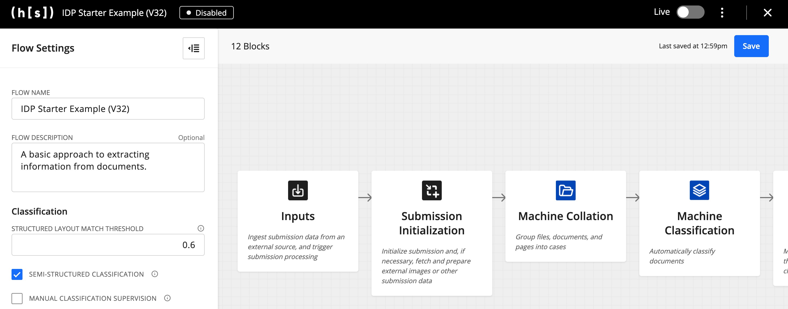

Introduction to Flows SDK
flows_sdk is a Python library for programmatically building flows: sequences of business steps managed and executed by the Hyperscience Platform. We encourage you to complete the Tutorial as the best way to get started.
These definitions are like blueprints - they configure and wire together Triggers, Blocks, and other parameters, while the Hyperscience Platform takes care of the execution and lifecycle during the actual runtime.
Flows are defined as Python files using classes from this library. They are then converted to an importable JSON format that can later be deployed on a Hyperscience instance.
Any code you build using the flows_sdk is managed externally from the Hyperscience Platform (e.g., in a separate git repository), while the produced artifacts can be uploaded to and managed by the Hyperscience Platform.
System Architecture
The flows_sdk enables you build flows using a Python library in whatever environment/IDE you prefer. The resulting .py file must be packaged into a JSON artifact to be imported into the Hyperscience Platform.
Once uploaded to the Hyperscience Platform, this JSON artifact is kept in sync with any changes made in the Flow Studio. The Flow Studio provides a GUI for business users to manage the flow’s settings over time.

The only requirements to use the flows_sdk are:
Development: The only local requirement for development is
python 3.7+and a link to this library, provided by your CX representative. Additional dependencies will later be pulled viapip.Deployment: In order to deploy flows built using the
flows_sdk, you need:A running instance of the Hyperscience Platform (
v32and above)A user account with permissions to edit and import flows
Library Structure
The flows_sdk library contains everything you need to build on the Hyperscience Platform. As illustrated below, it contains the following top-level sublibraries: flows, blocks, and implementations. Documentation is split into Source Documentation and the IDP Library.
Source Documentation includes all of the underlying classes necessary for a flow to execute, such as Flow, Block, and CodeBlock. These classes are agnostic to the version of the Hyperscience Platform you are running.
The IDP Library includes the latest performant blocks for intelligent document processing. This library is specific to Hyperscience Platform V32. Additional IDP libraries will be released for subsequent versions of the Hyperscience Platform.
Basic Concepts
Flow
A flow is a sequence of business steps managed and executed by the Hyperscience Platform. Flows are composed of Blocks, such as IDP blocks (e.g., Classification), Routing, Fork, Triggers, as well as other helper components.
Once uploaded to the Hyperscience Platform, flows are rendered and managed within the Flow Studio:

Block
A block is a single step in a flow. Using the flows_sdk, blocks can be defined and ordered, and their inputs can be customized and passed statically (i.e., during flow definition or via UI-exposed settings) or dynamically (i.e., the output of a previously executed block).
Routing
A system block that routes execution to one of its branches based on a condition (similar to a switch..case statement). Routing is viewable within the Flow Studio as a branching of logic:
A full definition is in the Source Documentation.
Fork
A system block that schedules other blocks for parallel execution. A full definition is in the Source Documentation.
Triggers & Outputs
Trigger Blocks initiate the execution of a flow. Some examples are: watching a folder for new files, checking an inbox, listening to a message queue, etc.
Output Blocks send information to external systems. Some of these blocks are generic (e.g., HTTP_EXPORT) while others are integrations into specific systems (e.g., EXPORT_UIPATH).
Full definitions are in the Block Library for Trigger Blocks and Output Blocks.
Submission Object
Many block subclasses available within the Block Library use a Submission object, which is a dictionary of extracted document information with the following basic structure:
{
"submission": {
"id": "12345",
"documents": [
{
"id": "1",
"pages": [...] // list of pages
"document_fields": [...] // list of document fields
},
...
]
"cases": [],
}
}
As most blocks in the Block Library require a Submission object for input, this paradigm enables you to easily pass the output of one block as the input to the next block:
# This example shows the output of MachineTranscriptionV3Block (i.e. machine_transcription)
# being used as the input to a ManualTranscriptionV2Block
machine_transcription = MachineTranscriptionV3Block(
reference_name='machine_transcription',
submission=previous_block.output('submission'))
manual_transcription = ManualTranscriptionV2Block(
reference_name='manual_transcription',
submission=machine_transcription.output('submission'),
...
)
The exact state of the Submission object will depend on which processing blocks have been executed. Most blocks will also wrap the Submission object within additional flow-level metadata.
Read our Testing & Debugging guide for how to inspect the current state of the Submission object in your flow. Or, download a full example here - this is the output of ManualTranscriptionV2Block from our Tutorial).